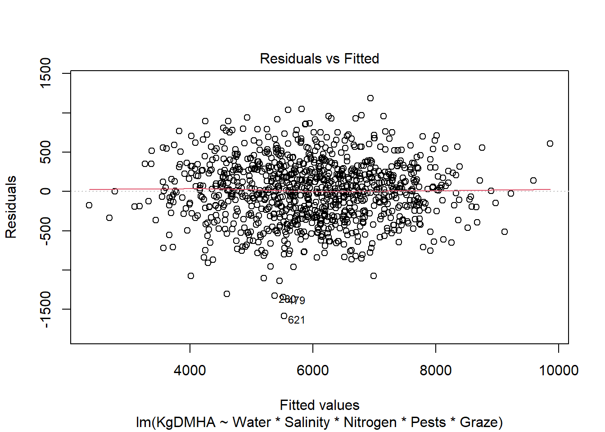
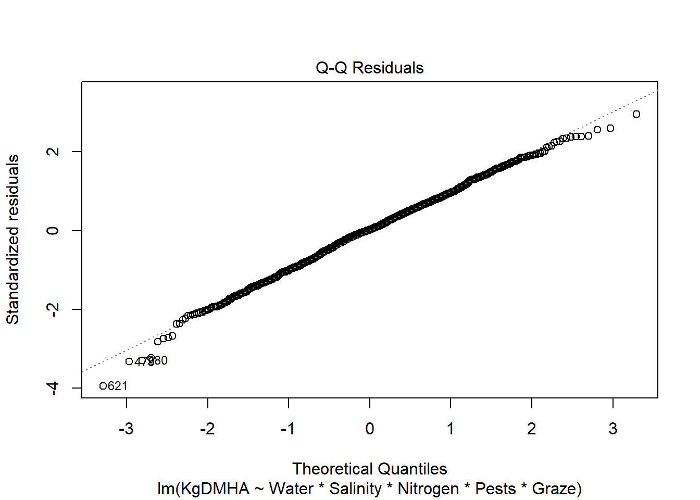
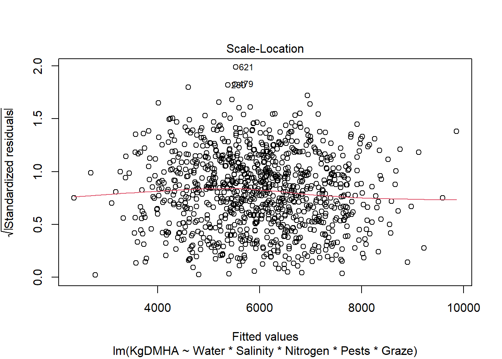
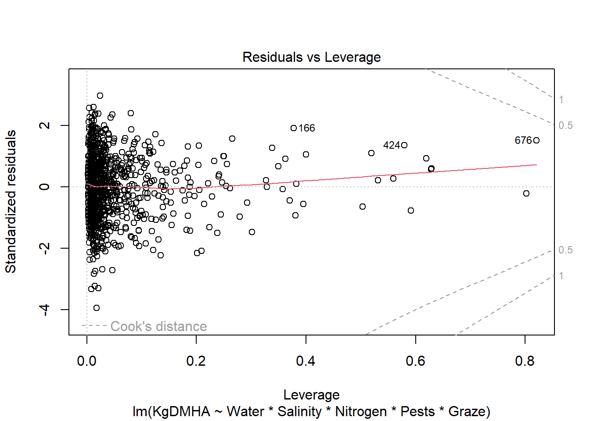
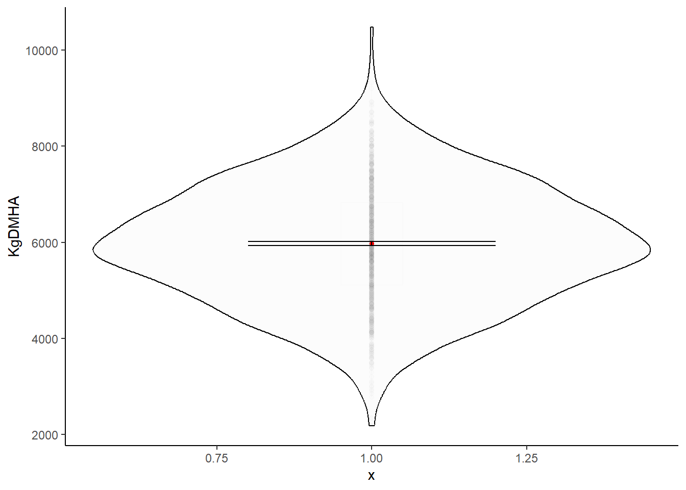
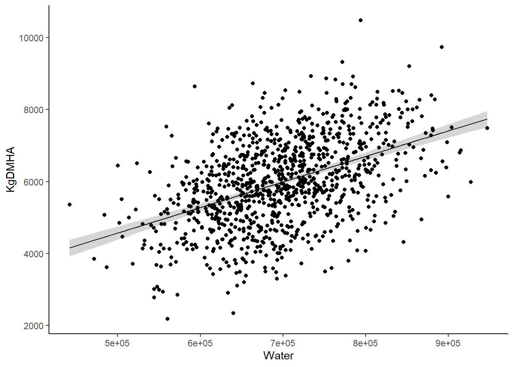

grasslanddata<-read.csv("data/grasslanddata.csv")4 Model Selection and multi-model inference
4.1 Complexity of Linear Models
So far we have only explored two types of linear models (we are currently starting to talk about Generalized Linear Models:
Simple Linear Models
Multiple Linear models
As we progress in the class we will look at more complex (both theoretically, and coding-wise) models. We will look into Generalized Linear Models (GLM), mixed-effects models, generalized additive models, and multivariate models. Time (and interest) dependent we might go into neural networks, machine learning and AI.
In order to understand those models, you need to understand linear models.
Also, so far we have been running a single model for each dataset. In today’s activity you will be tasked with running multiple models for a single dataset. And then comparing models using Maximum Likelihood. These will allow us to explore multiple models.
Before continuing: while we have been running multiple models, we haven’t had time to stop and think about how r is computing the models. How does r finds a value for each coefficient \(\beta\)? It has been using least squares to find these values. Essentially, it finds values of \(\beta\) that minimizes the sum of squares of the differences between predicted and observed values. Think of it as finding the line that minimizes residuals! While these are very useful methods, they are not the only ones!
We will start using some methods that use Likelihood. During Wednesday class we talked a bit about likelihood and probability. At this point you should be able to understand the difference between the two (even if you can’t describe it). If you find yourself using (or interested in using) Likelihood and Maximum Likelihood Methods, do yourself a favor and download the book by Burnham and Anderson: Model Selection and Multimodel Inference. Which is free to download through the University of Tennessee Libraries! (Burnham and Anderson 2010) It is the most useful book for multi-model inference!
We will discuss the following paper next week: (Tredennick et al. 2021) available here!
While I am a huge proponent and user of AIC as an inferential method, the authors clearly disagree with me, and they make some very good points!
Note
We will talk more about Likelihood next week. Last Wednesday we discussed the differences between Likelihood and Probability, hopefully that is still partially clear in your mind
Likelihood description. Hopefully this will help with understanding likelihood.
Likelihood theory is a paradigm underlying both frequentist and Bayesian statistics, and you need to understand it if you ever want to go deeper into data science and data analyses. This is similar to the example I talked about in class.
The theory underlying likelihood deals with a probabilistic model given the parameters \((\theta)\). Remember, the parameters are “the real” values that we are trying to estimate! And in this case I will describe our observations as y. In probability we usually do the following: \(P(y|\theta)\). Essentially, what is the probability of of observing the outcomes represented by y, given \(\theta\).
In a coin-toss example, \(\theta\) is the probability of a success (in this case, a success is considered a tail). And we can calculate the probability of observing three straight tails (think of this as \(y_1 =1, y_2 =1, y_3 =1)\). In this case we know \(\theta\). It is 0.5. So, the probability of observing three straight tails is 0.125. We can also estimate the probability of observing 1,10 or 1,000,000 straight tails. Or 2 tails and three heads, or any combination of results. Because we know \(\theta\).
However, in the real world, we do not know \(\theta\). That is what we are trying to estimate. Think of \(\theta\) not as a coin-toss now, but as ANY of the following examples: 1) probability that a cow will be pregnant given that it was given a specific drug, 2) probability of survival for a turkey during a season, 3) probability that a food product will spoil after 48 hours at room temperature following a new packing procedure, 4) probability of a fish passing through a fish ladder it approached, 5) probability of a manufacturing defect in a new wood processing method.
In these cases, we do not know the probability! That is what we are trying to estimate, however, we do know the outcomes! We sample our population and know the results. Going back to the coin-toss example, assume we don’t know the probability of getting tails in a coin-toss. We don’t know if the coin is fair or not. However, you do an experiment and toss the coin 10 times and record the results. You replicate this experiment 25 times. Now you have 25 observations (\(y_i\)), where each y is the number of successes observed in each experiment i. However, we can estimate the probability of observing what we did if \(\theta\) was 0.01, and the probability of observing wat we did if it was 0.02, and if it was 0.03, or 0.04, and so on. This allow us to find a parameter \(\theta\) that would maximize the following function:
\[ \mathcal{L}(\theta|y) = P(y|\theta) \]
Essentially, maximum likelihood is a method that answers the following: “what value of theta would maximize the probability of observing what you actually observed?” By definition, the Likelihood function is conditional on the observed data, and is a function of the unknown parameter \(\theta\).
4.2 Testing different models
The beauty of model selection and multi-model inference is that we are not constrained by the limits of hypothesis testing. More often that not, we already know the answer to a hypothesis test. We already know that there are differences among populations, or that there is an effect of x on y. Using multi-model inference or other model selection methods we can test different hypotheses.
To do this, we will use different methods. First, we will simply compare the \(r^2\) values of each model. We will also use an information criterion, and finally we will use model cross-validation.
Download the grasslanddata.csv file. And explore it.
This dataset has 6 variables:
Response variable:
KgDMHA: Pasture mass. Measured in kilograms of fry matter per hectare
Abiotic explanatory variables:
Water, salinity, and nitrogen
Biotic variables:
Graze (average number of grazing animals observed in the area)
Pests: Proportion of grassland where pests are found. Divided in low (low proportion), half (about half of it has pests), and most.
You will be running all of the following models (keep reading before you start running models!):
- Null model
- Model with only effect of irrigation
- Model with with a quadratic effect of irrigation
- Model with all abiotic effects (additive)
- Model with all abiotic effects (interactive)
- Model with all biotic effects (additive)
- Model with all biotic effects (interactive)
- Model with all effects (additive)
- Run 1 model not described in this list
- Model with all effects (interactive)
- This is called a “global” model. It is your most complex model
- This is the model we use to test the assumptions
- No need to plot this model
You will be running all the models except #10. I will help with that one 😃.
The first model we run is the global model, that takes all 5 variables, and all the potential interactions:
\[ \begin{split} y \sim \beta_0+\beta_1x_1+ \\ \beta_2x_2+\beta_3x_3+\beta_4x_4+\beta_5x_5+ \\ \beta_6x_1x_2+\beta_7x_1x_3+\beta_8x_2x_3+ \\ \beta_9x_1x_4+\beta_{10}x_2x_4+\beta_{11}x_3x_4+ \\ \beta_{12}x_1x_5+\beta_{13}x_2x_5+\beta_{14}x_3x_5+ \\ \beta_{15}x_4x_5+\beta_{16}x_1x_2x_3+\beta_{17}x_1x_2x_4+\\ \beta_{18}x_1x_3x_4+\beta_{19}x_2x_3x_4+\beta_{20}x_1x_2x_5+\\ \beta_{21}x_1x_3x_5+\beta_{22}x_2x_3x_5+\beta_{23}x_1x_4x_5+\\ \beta_{24}x_2x_4x_5+\beta_{25}x_3x_4x_5+\beta_{26}x_1x_2x_3x_4+\\ \beta_{27}x_1x_2x_3x_5+\beta_{28}x_1x_2x_4x_5+\\ \beta_{29}x_1x_3x_4x_5+\beta_{30}x_2x_3x_4x_5+\beta_{31}x_1x_2x_3x_4x_5 \end{split} \] Woah! That is a lot. You only have to write the equations for three models, just be sure to udnerstand where they are coming from! Now, let’s run the model:
\[ \frac{123}{200} \]
model10<-lm(KgDMHA~Water*Salinity*Nitrogen*Pests*Graze,data = grasslanddata)
#summary(model10)
AIC(model10)[1] 14894.11Using plot(lm) will plot some exploratory plots that allow you to test assumptions. Essentially, plot 1 and 2 are enough to check the 3 main assumptios.
plot(model10)



#plot(resid(model10)~grasslanddata$KgDMHA)While some of the plots might not look great, in reality this is how most data looks like. In this case values over 8,000 kgs and under 5,000 kgs are rare, which makes the variance seem smaller in those values. However, it is usually pretty obvious when you need to transform your data and we will work on that later. In this case, we are meeting the assumptions, so we can run linear models without any transformations.
Now that we ran it, we can run all of the other models, make sure to follow the outlined steps
Call:
lm(formula = KgDMHA ~ 1, data = grasslanddata)
Residuals:
Min 1Q Median 3Q Max
-3792.2 -854.7 -17.2 847.3 4500.8
Coefficients:
Estimate Std. Error t value Pr(>|t|)
(Intercept) 5972.2 38.9 153.5 <2e-16 ***
---
Signif. codes: 0 '***' 0.001 '**' 0.01 '*' 0.05 '.' 0.1 ' ' 1
Residual standard error: 1230 on 999 degrees of freedomWarning: package 'ggplot2' was built under R version 4.3.3Warning: The `fun.y` argument of `stat_summary()` is deprecated as of ggplot2 3.3.0.
ℹ Please use the `fun` argument instead.
Call:
lm(formula = KgDMHA ~ Water, data = grasslanddata)
Residuals:
Min 1Q Median 3Q Max
-3210.3 -705.0 -15.5 782.0 3821.6
Coefficients:
Estimate Std. Error t value Pr(>|t|)
(Intercept) 1.020e+03 3.050e+02 3.344 0.000856 ***
Water 7.094e-03 4.340e-04 16.344 < 2e-16 ***
---
Signif. codes: 0 '***' 0.001 '**' 0.01 '*' 0.05 '.' 0.1 ' ' 1
Residual standard error: 1093 on 998 degrees of freedom
Multiple R-squared: 0.2112, Adjusted R-squared: 0.2104
F-statistic: 267.1 on 1 and 998 DF, p-value: < 2.2e-16
Model 6
Call:
lm(formula = KgDMHA ~ Graze + Pests, data = grasslanddata)
Residuals:
Min 1Q Median 3Q Max
-2556.9 -629.3 22.9 608.7 2854.6
Coefficients:
Estimate Std. Error t value Pr(>|t|)
(Intercept) 8508.848 105.262 80.83 < 2e-16 ***
Graze -57.008 2.446 -23.31 < 2e-16 ***
Pestslow 844.351 112.874 7.48 1.62e-13 ***
Pestsmost -892.254 62.145 -14.36 < 2e-16 ***
---
Signif. codes: 0 '***' 0.001 '**' 0.01 '*' 0.05 '.' 0.1 ' ' 1
Residual standard error: 909 on 996 degrees of freedom
Multiple R-squared: 0.4557, Adjusted R-squared: 0.4541
F-statistic: 278 on 3 and 996 DF, p-value: < 2.2e-16
Question 4 📝 10 pts
For the models do the following:
- Write the equation (only use y, x, and \(\beta's\)).
- Only do this for models 1, 2, 3, 4, and 6.
- To write equations, write two dollar signs $ $
- Google “Rmarkdown math” for help with how to write equations
- You can also right click on any equation on my assignment and select show math as Tex command to see how I wrote the equation.
- Run the model
- Print the output
- Plot the model (only models with one effect or one categorical and one continuous effect)
- What do I mean with plot the model? Plot the data (observed), and the predicted values (the line), as well as confidence intervals)
- You don’t NEED to plot the models with three or more effects, but I encourage you to try to think or find a way to plot them
Some important coding tips:
Additive models have a
+Interactive models have a
*You can mix interactive and additive effects. The order is important though!
Run quadratic models using:
poly(x,2)You can run any polynomial term usingpoly(x,degree). We haven’t talked about this!
Be careful with naming your model!
Give each model a different name, and make it a name that makes sense! We will reference the models back!
4.3 Model selection
We will use three different methods to compare models and select our best model.
Think about it 🧠
We will discuss this on Monday and Wednesday: what makes a model “better”? Start thinking about it
4.3.1 \(R^2\)
We haven’t talked about correlation and coefficient of determination
Correlation: The amount of linear association between two variables. It’s measured as \(r\)
The R-squared value, denoted by R2, is the square of the correlation. It measures the proportion of variation explained by the model. Essentially, if our predicted model explained and landed perfectly on each observation, then In each of the models we ran, we can obtain a
An \(R^2\) value gives us the proportion of the data variance that was explained by the model.
Think about it 🧠
We will discuss this on Monday: is a higher \(r^2\) always better? When is it not better?
Assignment question 5:
Check the outputs of the models you ran, and find the one with the highest \(R^2\). Do you think it is the best model? You should use the adjusted \(R^2\)
4.3.2 AICc
We will talk more about AICc later in class. For the time being what you need to know is that it is an information criterion that uses maximum likelihood. While we can use maximum likelihood to estimate expected values and obtain estimates, we can also use it to compare models. In this case AIC compares models, and the model with the lowest AIC is the best. I attempt an explanation here, but if you don’t understand it, hopefully next classes will make it clearer!
AIC has the following equation:
\[ AIC = -2log(\mathcal{L}(\hat{\theta}|data))+2K. \]
Which may look complicated. But it is an actually pretty simple equation with two important parts:
1) The expression \(log(\mathcal{L}(\hat{\theta}|data)\) is the numerical value of the log-likelihood at its maximum point (see Likelihood description or Burnham and Anderson). This maximum point on the log-likelihood function corresponds to the values of the maximum likelihood estimates.
What does this mean? A good way of thinking about it is: “What is the likelihood of observing the data you did, if the model was real?” The Higher the Likelihood the “evidence” of a better model (or better fit of the data to the model). If you notice the equation is -2 times the log-likelihood. Essentially meaning: a lower value is a better model.
2) The expression \(2K\) is simply 2 times the number of parameters (K). It is interpreted as a penalty for increasing the number of parameters. It increases parsimony
Essentially this means, AICc chooses the model with the highest Likelihood, while penalizing higher complexity. There are two reasons for this:
1) Every time you add a parameter the Likelihood goes up.
2) While higher complexity tends to decrease bias, it increases variance. The optimum model complexity is found looking at both the Likelihood and the complexity.
Think about it 🧠
Why does adding parameters result in higher Likelihood?
Because AIC has a negative log-likelihood term and a positive K term LOWER VALUES ARE BETTER. The model with the lowest AIC is “the best model”.
Importantly, the AIC value doesn’t tell us anything by itself. It is purely a comparative value, where lower is better. We need to estimate \(\Delta AIC_i\) which is the difference between the best model and each model i.
| \(\Delta AIC_i\) | Level of Empirical Support of Model i |
|---|---|
| 0-2 | Substantial |
| 2-4 | Less |
| 4-7 | Considerably Less |
| >10 | Essentially none |
Ok, let’s now use AIC to analyze our models.
We are using a corrected version of AIC that is ideal for small samples (I recommend you always use this one):
\[ AIC_c = AIC +\frac{2K(K+1)}{n-K-1} \]
First save all the models in a list. I have some sample code here, but do it with your models (you already run them!)
CandidateModels<-list("null"=model1,"model2"=model2...)Now, download and load the AICcmodavg package, and run:
selectionTable <- aictab(cand.set = CandidateModels)And that’s it! What model or models are best? This is super easy to run!
Assignment question 6:
Present your selection table, and describe what model was the best.
You probably have also heard of likelihood ratios. This essentially compared the Likelihood of two models. You can run them pretty easily in R. But we will leave that for some other time. I am terrible at estimating how much time my assignments take students, but I think that this lab is already very time consuming!
If you are curious about how to run them, check this documentation by the AICcmodavg package: vignette
4.4 Cross-Validation
Oftentimes a criticism when using linear models to predict values, is that we are using the same dataset to explore the data, to create model, to make inference, and to predict the results.
A way to deal with this, is by using cross-validation, in cross-validation we use a portion of the dataset to “train” the data, and a portion to “test” it.
Think about it 🧠
Why is it useful to separate your data-set in two to test your predictions useful?
We will do that for the following three models:
KgDMHA~ Water + Salinity + Nitrogen
KgDMHA~ Pests + Graze
KgDMHA~ Water + Salinity + Nitrogen + Pests + Graze
Assignment question 7:
Follow these seven steps:
1) Randomly split your dataset, with ~75% of the data for the training and ~25% of the data for the test
2) With the training dataset, run each of the three models. You should obtain an output for each model
3) Obtain an AICc value for each of the three models.
AIC(model)4) In the test dataset, add three new columns called predictmodel1, predictmodel2, precitmodel3. Populate the columns with the predicted values based on each of the three models you ran. You can use the coefficients, or the predict function to obtain those values. It’s easiest to use the predict.lm function. Let me know if you need help with this! Or check the last assignment!
5) Use the following equation:
\[ RMSE = \sqrt{\frac{\sum(y_i-\hat{y}_i^2)}{n}} \]
RMSE is the root mean square error. Essentially, a measure of the distance between predictor and observation.
Estimate RMSE for EACH of the three models. Lower RMSE is better!
6) According to the RMSE, what model is the best?
7) Compare the RMSE with the AICc and with the R-squared from the models. Do all three metrics agree on the best model?
While this is great, it’s painful and costly to separate your data! You want to use 100% of your data to make predictions! Also, oftentimes our datasets aren’t big enough to separate them in two. In order to deal with this, we will use a cross-validation method that requires only one dataset. We will use a particular kind of cross validation known as K-fold. The conceptual steps of K-fold cross validation for model selection are as follows:
Randomly divide the data set into k number of groups (preferably equal size)
Fit a model to all but one of the groups
Calculate a metric such as RMSE using the observations from the k-th group that was not used to train the model
Repeat this process k-number of times using each group
Calculate the overall RMSE as the average of each calculated above
Repeat this process for each separate model you wish to compare
Compare the metric to the estimated metric from other possible models to select the ‘best’ model
The point is, you are testing your model in data that was not used to develop the model. Does that make sense? If not, wait until Monday or raise your hand! :)
It is easy to do:
library(caret)Warning: package 'caret' was built under R version 4.3.3Loading required package: latticectrl <- trainControl(method= 'cv', number= 10)
abiotic <- train(KgDMHA~ Water + Salinity + Nitrogen, data= grasslanddata, trControl= ctrl,method="lm")We can get the RMSE for each model using:
print(abiotic)Linear Regression
1000 samples
3 predictor
No pre-processing
Resampling: Cross-Validated (10 fold)
Summary of sample sizes: 900, 900, 900, 900, 900, 900, ...
Resampling results:
RMSE Rsquared MAE
958.6632 0.3979449 771.4688
Tuning parameter 'intercept' was held constant at a value of TRUEAnd we can get the predictive values from the training set using:
summary(abiotic$finalModel)
Call:
lm(formula = .outcome ~ ., data = dat)
Residuals:
Min 1Q Median 3Q Max
-2991.99 -652.64 27.78 654.49 3105.87
Coefficients:
Estimate Std. Error t value Pr(>|t|)
(Intercept) 4.373e+02 3.162e+02 1.383 0.167
Water 7.154e-03 3.805e-04 18.802 <2e-16 ***
Salinity -1.189e+02 9.003e+00 -13.207 <2e-16 ***
Nitrogen 4.556e+02 3.969e+01 11.479 <2e-16 ***
---
Signif. codes: 0 '***' 0.001 '**' 0.01 '*' 0.05 '.' 0.1 ' ' 1
Residual standard error: 958.3 on 996 degrees of freedom
Multiple R-squared: 0.395, Adjusted R-squared: 0.3931
F-statistic: 216.7 on 3 and 996 DF, p-value: < 2.2e-16
Assignment question 8:
Report the three RMSE values.
In future assignments you might end up running multiple models. We will use a combination of tidy, loops and other tools to test how to run these models and compare them relatively quickly.